El juego sigue a Heather Mason, una adolescente que vive con su padre Harry Mason. Su vida cotidiana se ve interrumpida cuando es atacada por un extraño ser en un centro comercial y perseguida por figuras misteriosas.
Pronto, Heather descubre que está vinculada a la secta de Silent Hill, la misma que apareció en el primer juego, y que su destino está ligado a Cheryl/Maria, su identidad anterior como hija de Harry Mason.
Heather se adentra en una ciudad Silent Hill más oscura y distorsionada, enfrentándose a monstruos que simbolizan su miedo, confusión y trauma.
Encuentra personajes clave como Tracy, una niña aparentemente poseída, y Douglas Cartland, un investigador que la ayuda a comprender su conexión con la secta y los eventos del pasado.
La secta planea usar a Heather para invocar a God, un ser que traerá su versión de “renovación” al mundo.
A lo largo del juego, Heather debe enfrentarse a su propio pasado y a la verdad sobre su origen mientras lucha por sobrevivir.
El juego culmina con la confrontación con la secta y su líder, y su victoria o fracaso depende del enfrentamiento con los horrores que buscan controlarla,
cerrando el vínculo con los eventos del primer juego y la continuación de la mitología de Silent Hill.
| Imagen | Monstruo | Descripción breve |
 | Closer | Gigantes con brazos prensiles que representan opresión hacia Heather. |
 | Pendulum | Criatura flotante con cuchillas giratorias y chillidos. |
| 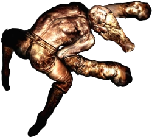 | Slurper | Bestias rápidas que se arrastran para atacar por sorpresa. |
| 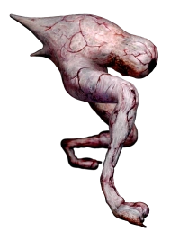 | Numb Body | Larvas blandas que suenan hinchadas; simbolizan fragilidad. |
| 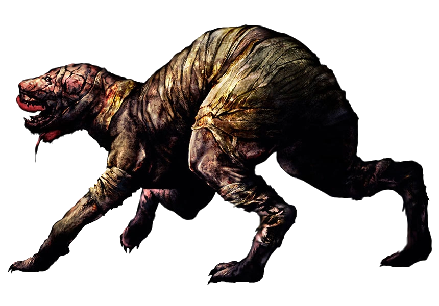 | Double Head | Perros bífidos con carne expuesta del Otro Mundo. |
| 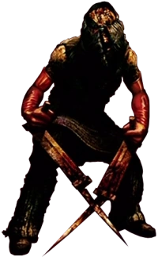 | Scraper | Humanos del culto con cuchillas; simbolizan fanatismo agresivo. |
| 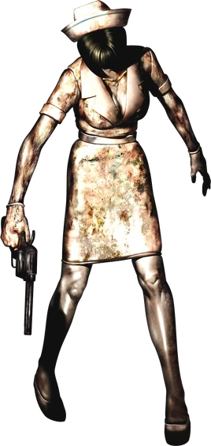 | Nurse (SH3) | Más grotescas y agresivas que en SH2; trauma hospitalario de Heather. |
| 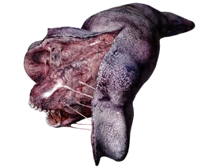 | Split Worm | Gusano gigante que aparece tempranamente. |
| 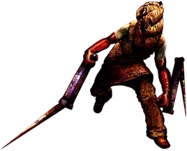 | Missionary | Asesino enviado por el culto para eliminar a Heather. |
| 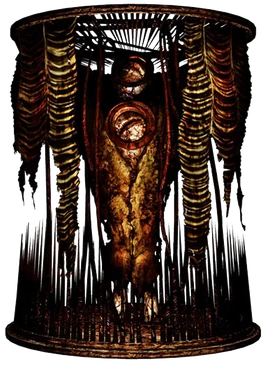 | Glutton | Enorme criatura invisible tras un sello mágico. |
| 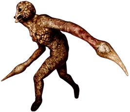 | Leonard Wolf | Padre de Claudia transformado en monstruo acuático. |
 | God (SH3) | La deidad incompleta del culto, nacida a través de Heather. |


 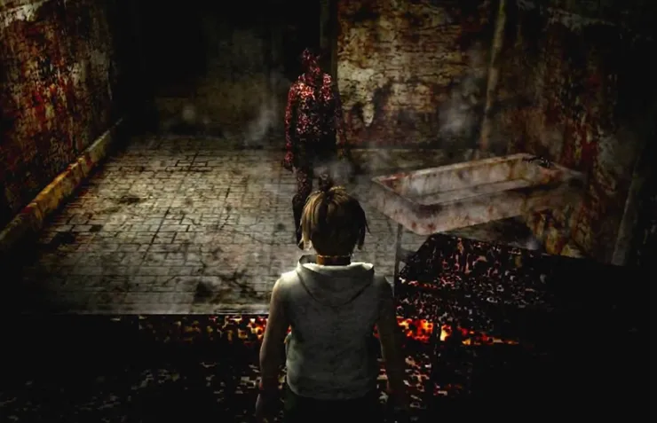
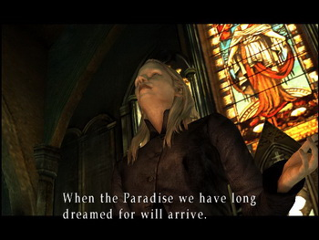
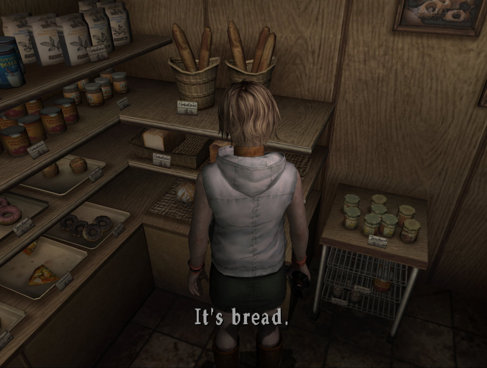
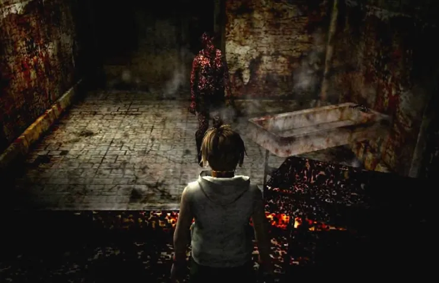
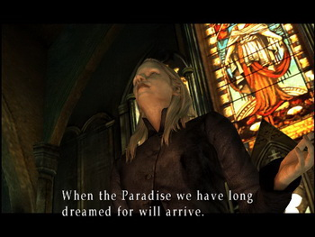
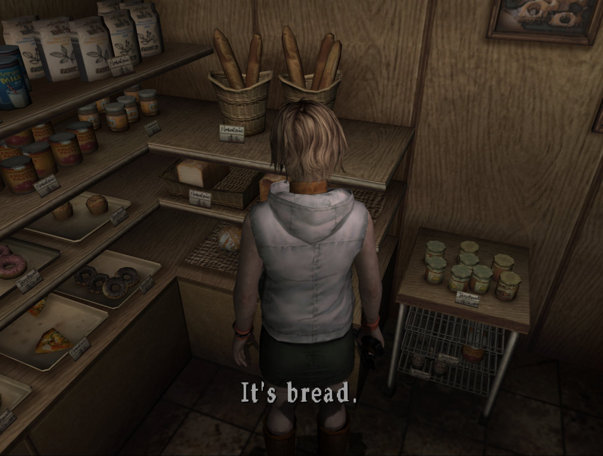